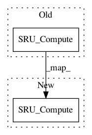

ccbc21938d895de333e83a665ec6147adabf35c2,sru/sru_functional.py,SRUCell,forward,#SRUCell#,268
Before Change
mask_h = self.get_dropout_mask_((batch, n_out*bidir), self.dropout)
return SRU_Compute(u, input, self.weight_c, self.bias, c0, mask_h)
else:
return SRU_Compute(u, input, self.weight_c, self.bias, c0)
def get_dropout_mask_(self, size, p):
Composes the dropout mask for the `SRUCell`.
After Change
mask_h = self.get_dropout_mask_((batch, n_out*bidir), self.dropout)
h, c = SRU_Compute(u, input, self.weight_c, self.bias, c0, mask_h)
else:
h, c = SRU_Compute(u, input, self.weight_c, self.bias, c0)
if return_proj:
return h, c, x_projected.view(-1, batch, self.n_proj)
else:
In pattern: SUPERPATTERN
Frequency: 4
Non-data size: 2
Instances
Project Name: asappresearch/sru
Commit Name: ccbc21938d895de333e83a665ec6147adabf35c2
Time: 2018-07-30
Author: taolei@csail.mit.edu
File Name: sru/sru_functional.py
Class Name: SRUCell
Method Name: forward
Project Name: asappresearch/sru
Commit Name: ccbc21938d895de333e83a665ec6147adabf35c2
Time: 2018-07-30
Author: taolei@csail.mit.edu
File Name: sru/sru_functional.py
Class Name: SRUCell
Method Name: forward
Project Name: asappresearch/sru
Commit Name: 3b0506623985f43ecc95b928f321edcde20ce602
Time: 2018-01-03
Author: agbauer@gmail.com
File Name: cuda_functional.py
Class Name: SRUCell
Method Name: forward